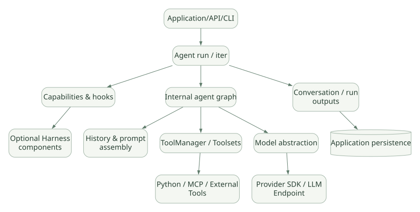

SECOND STUDY / Core·Graph·Harness 경계
Core·Graph·Harness 경계
이번 단원의 읽는 관점
기술의 정체성과 실행 책임을 나눈 뒤 고정 버전 소스 지도를 읽습니다.
살펴볼 경계Core v2.61.0과 별도 Harness의 버전·기능 범위를 혼동하지 마세요.
이 페이지의 세부 목차
1. 학습 목표와 설계 질문#
PydanticAI를 분석할 때는 다음 질문에 답할 수 있어야 한다.
- 누가 Agent Loop의 다음 단계를 결정하는가? 단순한
while루프인가, Graph Node 기반 상태 전이인가? - 모델 응답에 Tool 호출과 최종 Output이 동시에 있으면 무엇이 실행되는가? 어느 시점에 중단하는가?
- Python 함수의 시그니처가 실제 모델용 JSON Schema와 Runtime 검증 로직으로 어떻게 연결되는가?
- 여러 Tool은 어떤 실행기로 동시에 실행하며,
sequential=True는 어떤 순서를 보장하는가? - JSON 문법 오류, 인자 타입 오류, 비즈니스 검증 실패, 모델 API 오류, 네트워크 오류는 같은 Retry인가?
- Guardrails는 프롬프트 수준 지침인가, 도구 실행 직전의 코드 정책인가, 또는 격리된 보안 경계인가?
- 승인 대기 상태를 어떻게 표현하고, 다음 프로세스나 다음 Run에서 무엇을 복원하는가?
- Session/Conversation History, Agent State, 장기 Memory는 서로 어떻게 다른가?
- Core, 별도 Harness, Provider SDK와 외부 저장소는 각각 어떤 책임을 갖는가?
- 프레임워크가 타입 안정성을 제공해도 실제 계산의 의미적 정확성이 보장되지 않는 이유는 무엇인가?
1.1 학습 깊이와 산출물#
| 깊이 | 목표 | 이 문서의 대응 |
|---|---|---|
| L1 개념 | Agent·Tool·Graph·Schema의 역할을 설명 | 2–3장 |
| L2 실행 | 단계·분기·종료·재시도 흐름 설명 | 4–16장 |
| L3 코드 | 고정 버전의 파일·객체·함수와 연결 | 3–14, 24장 |
| L4 설계 | 대안, 이득, 비용, 실패모드 비교 | 17–25장 |
작성 원칙: API 이름을 나열하는 문서가 아니라, 입력 → 실행 코드 → 상태 변경 → 결과/오류 → 다음 실행을 추적하는 문서로 읽는다.
2. 기술의 정체성과 계층 분리#
2.1 SDK와 Framework 중 무엇에 가까운가?#
PydanticAI는 Python 라이브러리 형태로 설치하는 Agent 개발 프레임워크이다. 따라서 '설치 형식'은 SDK/라이브러리이며, '역할'은 Agent 실행 구조, Tool, Model, 검증, Message, 이벤트 및 확장 지점을 제공하는 Framework다. SDK·라이브러리·프레임워크는 서로 배타적인 범주가 아니다.
- Pydantic: Python 값과 스키마를 정의·검증하는 기반 라이브러리.
- PydanticAI Core: Agent 실행, Graph, Model abstraction, Tool, Output validation, Toolsets, Capabilities 등의 프레임워크 본체.
pydantic_graph: PydanticAI가 내부에서 사용하는 Graph 실행 추상화 및 독립적인 그래프/워크플로 설계 도구. 내부 Agent Graph와 사용자가 직접 만드는 Graph를 구별한다.- PydanticAI Harness:
pydantic-ai-harness별도 패키지가 제공하는 Skills, Memory, Compaction, Guardrails, Coder/Researcher와 같은 조합 가능한 기능 묶음. - Provider SDK/API: 실제 모델에 요청하고 토큰을 생성하는 외부 시스템. PydanticAI는 모델 자체가 아니다.
- Logfire/Evals: 별도의 관찰 및 평가 생태계. 설치만으로 모든 관찰·평가가 자동 완성되는 것은 아니다.
[DOC] 공식 Harness 개요, 공식 Capabilities 분류.
2.2 왜 PydanticAI인가: 설계 철학#
- Python 함수·타입·Pydantic Model을 Tool 및 Output 경계에 그대로 활용한다.
- Agent의 실행 상태를 Graph Node로 조직하고, 각 단계의 이벤트·히스토리를 노출한다.
- 모델·Tool·검증·Capabilities·저장소를 바꿔 끼울 수 있도록 인터페이스를 분리한다.
- 필수 Core와 무거운 Harness 기능을 패키지 차원에서 분리한다.
[INF] 이는 단순한 코딩 편의성 외에도 명시적 데이터 계약과 인터페이스 경계를 중시한 설계라고 볼 수 있다. 다만 입력 Schema 검증 ≠ 권한 인증 ≠ 비즈니스 사실 검증이다.
2.3 비교를 위한 책임 레이어#
가로로 이동해서 읽을 수 있습니다. 도식 크게 보기 ↗

원문의 학습용 도식입니다. 연결 방향·분기 조건·점선·쌍방향 연결을 보존해 세로로 배치했습니다. 실제 구현·의사코드·해석의 구분은 본문을 함께 읽으세요.
도식 원문 보기 (Mermaid)
flowchart TD
App[Application/API/CLI] --> Agent[Agent run / iter]
Agent --> Cap[Capabilities & hooks]
Agent --> Graph[Internal agent graph]
Graph --> Prompt[History & prompt assembly]
Graph --> TM[ToolManager / Toolsets]
Graph --> Model[Model abstraction]
TM --> Exec[Python / MCP / External Tools]
Model --> Provider[Provider SDK / LLM Endpoint]
Agent --> State[Conversation / run outputs]
Cap --> Harness[Optional Harness components]
State --> Store[(Application persistence)]주의: 도표는 소유권/의존성의 교육용 단순화이며, 런타임의 모든 함수 호출을 그대로 표현한 것은 아니다.
3. 패키지·모듈 지도 및 소스 추적법#
3.1 고정 버전 핵심 소스#
| 책임 | 실제 저장소 경로 (v2.61.0 기준) | 확인할 대상 |
|---|---|---|
| Agent facade | pydantic_ai_slim/pydantic_ai/agent/__init__.py |
Agent, 실행 준비, Lifecycle, iter |
| Agent 공개 추상화 | pydantic_ai_slim/pydantic_ai/agent/abstract.py |
run API 계약 |
| Agent Graph | pydantic_ai_slim/pydantic_ai/_agent_graph.py |
UserPromptNode, ModelRequestNode, CallToolsNode, EndStrategy |
| Tool manager | pydantic_ai_slim/pydantic_ai/tool_manager.py |
ToolManager, 검증, 실행, Retry |
| Tool execution | pydantic_ai_slim/pydantic_ai/_tool_execution.py |
process_tool_calls, 병렬 구간·Barrier |
| Tool public API | pydantic_ai_slim/pydantic_ai/tools.py |
RunContext, ToolDefinition, deferred types |
| Toolset API | pydantic_ai_slim/pydantic_ai/toolsets/ |
Function/MCP/Wrapper/Prepared Toolset |
| Output | pydantic_ai_slim/pydantic_ai/_output.py, output.py |
schema, validation, processor, output modes |
| Messages | pydantic_ai_slim/pydantic_ai/messages.py |
ModelRequest/Response, ToolCall, Return, Retry |
| Model abstraction | pydantic_ai_slim/pydantic_ai/models/ |
Model requests, streaming, provider adapters |
| Capabilities | pydantic_ai_slim/pydantic_ai/capabilities/ |
hooks, wrappers, per-run capability |
| Prompt/history | pydantic_ai_slim/pydantic_ai/_system_prompt.py, _history_processor.py |
prompt 조합/과거 기록 변환 |
| Usage | pydantic_ai_slim/pydantic_ai/usage.py |
requests, tokens, limit |
| Tests | tests/ |
경계 조건, Mock Model, 승인·Tool 실패 테스트 |
원본 참조: tag v2.61.0, 개발용 구조 가이드 (해당 경로 존재 여부는 고정 버전 링크에서 재확인).
3.2 구현을 읽는 순서#
추천 추적 순서
Agent외부 API → 실행 준비·리소스 진입._agent_graph.py→ Node와 State, 모델 요청.tool_manager.py→ 해당 Step에서 노출되는 Tool 및 호출 검증._tool_execution.py→ Output Tool / Function Tool 분류, 병렬화 및 Deferred 처리._output.py→ 최종 Output 처리.messages.py→ 결과가 어떤 메시지로 기록되는가.capabilities/→ 기본 흐름에 어느 Hook이 끼어드는가.
함수 이름이 같아도 공개 API와 내부 구현의 책임이 다르다. 특히 모델에 Tool을 노출하는 것과 외부 함수를 실제로 실행하는 것을 혼동하지 말자.
3.3 소스에서 사실을 검증하는 방법#
- 호출자: 이 함수를 누가, 어느 조건에서 부르는가?
- 입력:
RunContext, Graph State, ModelMessage, ToolDefinition의 어느 필드를 읽는가? - 부작용: 데이터베이스 변경, 파일 변경, 네트워크 요청, Tool 실행 등 되돌리기 어려운 작업이 있는가?
- 상태:
run_step,output_retries_used,messages, Tool 성공·실패 플래그가 갱신되는가? - 오류: 사용자에게 반환되는 예외, 모델에 피드백되는 오류, 별도 Retry가 있는가?
- 경계: Python Core가 보장하는 것과 Provider·외부 저장소에 맡기는 것은 무엇인가?